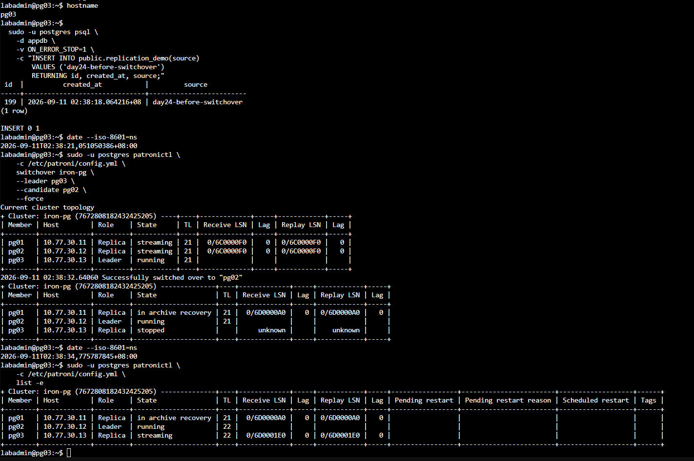
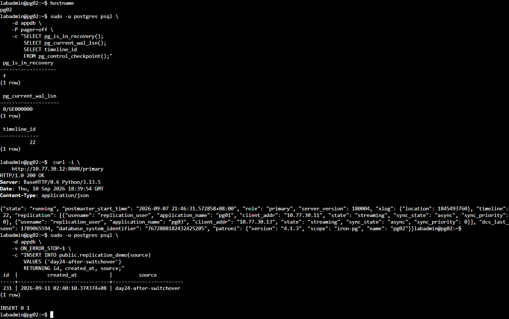
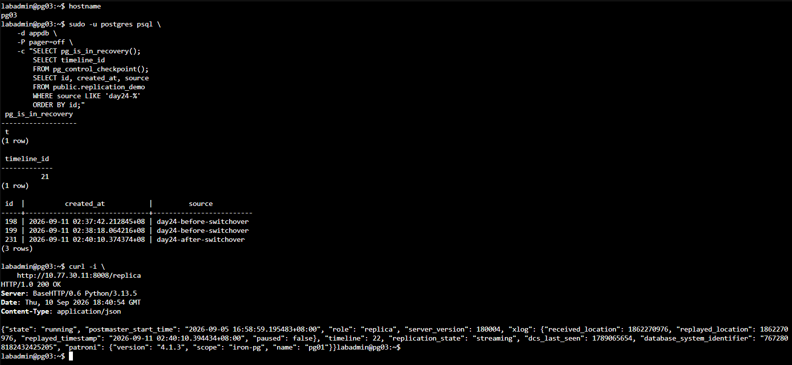
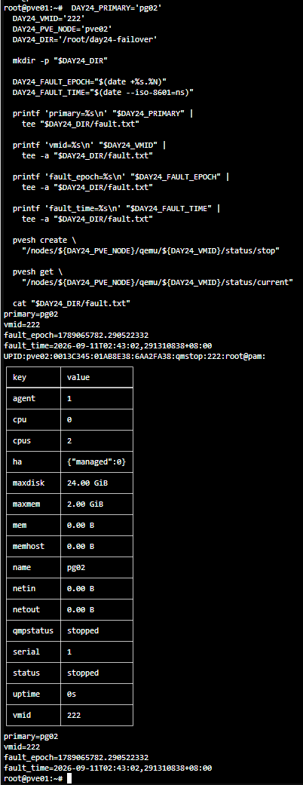
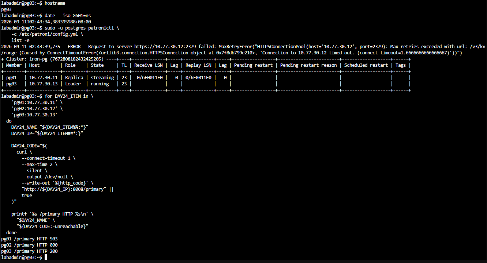
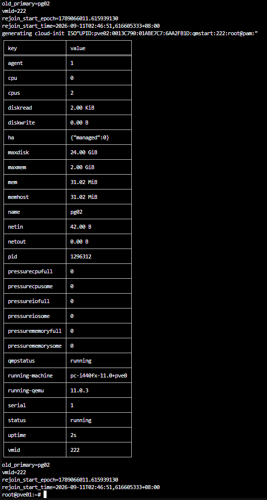
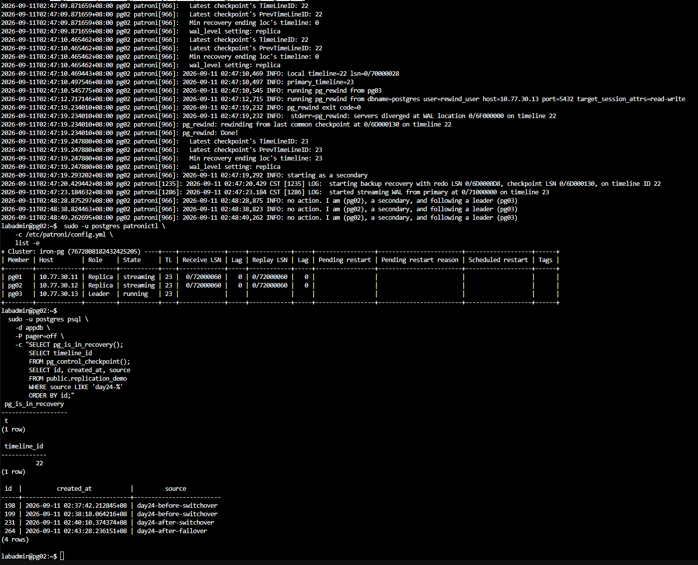

Day 24｜PostgreSQL HA 叢集實作（下）：計畫性切換、故障切換與舊 Primary 安全回歸
對應文章：Day 24｜PostgreSQL HA 叢集實作（下）：計畫性切換、故障切換與舊 Primary 安全回歸
本日使用先前串流複寫實作建立的 appdb.public.replication_demo 測試資料。開始前要確認 3／3 etcd 與 3／3 Patroni 成員健康，並保存目前時間軸（Timeline）、Leader 與複寫狀態。
本日操作順序
- 從任一健康 PostgreSQL 節點記錄目前 Leader、時間軸、LSN 與複寫狀態。
- 先執行計畫性切換（Planned Switchover），確認新舊角色正常後恢復 3／3 健康。
- 再停止當下的 Leader，觸發非計畫性故障切換（Unplanned Failover）。操作前必須核對實際角色。
- 確認新 Leader 可寫、Replica 已追上後，再讓舊 Primary 重新加入（Rejoin）。
每個實驗一次只注入一種故障。前一個實驗未恢復 3/3 健康前，不進入下一節。
1. 建立切換前基準
操作順序：先從任一 PostgreSQL 節點找出 Leader，再到目前 Leader 執行 SQL。
在任一 PostgreSQL 節點執行：
sudo -u postgres patronictl -c /etc/patroni/config.yml list -e
記下 Role 為 Leader 的節點名稱。本次實測為 pg03；若畫面顯示其他節點，後面的 Leader 操作要跟著實際結果調整。
在進行任何切換前，先確認 DCS 中的動態設定同時包含正確層級的 pg_hba 與 use_pg_rewind：
sudo -u postgres patronictl \
-c /etc/patroni/config.yml \
show-config iron-pg
sudo -u postgres psql -d postgres -P pager=off \
-c "SELECT line_number,type,database,user_name,address,auth_method,error
FROM pg_hba_file_rules
WHERE user_name @> ARRAY['rewind_user']::name[]
ORDER BY line_number;"
這裡複查先前建立的 Rewind 設定。postgresql.use_pg_rewind 必須為 true，並且存在 hostssl postgres rewind_user 10.77.30.0/24 scram-sha-256 且 error 為空的 HBA 規則。條件不符時先修正設定，再開始角色切換實驗。
在本次實測的 Leader pg03 執行：
sudo -u postgres psql -d appdb -P pager=off
進入 psql 後執行：
SELECT pg_is_in_recovery();
SELECT pg_current_wal_lsn();
SELECT timeline_id FROM pg_control_checkpoint();
SELECT application_name,
client_addr,
state,
sync_state,
replay_lsn
FROM pg_stat_replication
ORDER BY application_name;
SELECT count(*) FROM public.replication_demo;
\q
預期 pg_is_in_recovery() 為 f，而 pg_stat_replication 可看到兩個 streaming Replica。先寫入一筆切換前資料：
sudo -u postgres psql -d appdb -v ON_ERROR_STOP=1 \
-c "INSERT INTO public.replication_demo(source) VALUES ('day24-before-switchover') RETURNING id,created_at,source;"
本日量測 Patroni 角色變化、REST 端點與資料庫可寫時間。完整用戶端 RTO 要等代理、固定入口與應用程式完成後一起量測。
2. 計畫性切換
操作位置：任一健康 PostgreSQL 節點。先讀取當下角色，再選一台狀態為 streaming 且 Lag 為 0 的 Replica。
先確認狀態：
sudo -u postgres patronictl -c /etc/patroni/config.yml list -e
本次實測的 Leader 是 pg03、候選是 pg02，因此執行：
date -Is
sudo -u postgres patronictl -c /etc/patroni/config.yml \
switchover iron-pg --leader pg03 --candidate pg02 --force
若目前角色不同，將 --leader 與 --candidate 改成畫面中的實際名稱。切換完成後立即執行：
sudo -u postgres patronictl -c /etc/patroni/config.yml list -e
curl -i http://10.77.30.12:8008/primary
curl -i http://10.77.30.13:8008/replica
上例預期 pg02 的 /primary 與 pg03 的 /replica 都回應 HTTP 200。接著在新 Leader pg02 寫入資料：
sudo -u postgres psql -d appdb -v ON_ERROR_STOP=1 \
-c "INSERT INTO public.replication_demo(source) VALUES ('day24-after-switchover') RETURNING id,created_at,source;"
到舊 Leader pg03 確認已成為 Replica 並能讀到新資料：
sudo -u postgres psql -d appdb -P pager=off \
-c "SELECT pg_is_in_recovery(); SELECT id,source FROM public.replication_demo WHERE source LIKE 'day24-%' ORDER BY id;"
預期 pg_is_in_recovery() 為 t，並能看到切換前後兩筆資料。等 patronictl list -e 再次顯示三台 running／streaming 且 Lag 為 0，才進入下一節。

圖（一）本次實測由 pg03 切換至 pg02，切換前後分別保留可辨識的測試資料。

圖（二）pg02 的復原狀態為 false，/primary 回傳 HTTP 200，並能寫入切換後資料。

圖（三）原 Primary pg03 的 pg_is_in_recovery() 為 t，並能讀取由新 Primary 寫入的資料；畫面下方另外確認 pg01 的 /replica 回傳 HTTP 200。
3. 非計畫性故障切換
操作順序：先找出當下 Leader，再從 PVE Web UI 強制停止該 Leader VM。這是 Lab 故障注入，不可在正式環境照做。
先在任一存活 PostgreSQL 節點執行並記錄目前 Leader：
sudo -u postgres patronictl -c /etc/patroni/config.yml list -e
目前的 VM 對應如下：
- pg01：VM 221，位於 pve01。
- pg02：VM 222，位於 pve02。
- pg03：VM 223，位於 pve03。
在另一台 Replica 開啟觀察 Console：
watch -n 1 'sudo -u postgres patronictl -c /etc/patroni/config.yml list -e'
接著到 PVE Web UI：
- 選取目前 Leader 對應的 VM。
- 先再次核對 VM 名稱與
patronictl顯示的 Leader 相同。 - 記錄目前時間。
- 按右上角
Stop，確認強制停止該 VM。 - 不要停止第二台 PG VM，也不要停止存活節點的 etcd。
- 回到觀察 Console，等待另一台 Replica 成為 Leader。
新 Leader 出現後按 Ctrl+C 離開 watch，再執行：
sudo -u postgres patronictl -c /etc/patroni/config.yml list -e
在新 Leader 寫入一筆資料。以下指令要在 Role 為 Leader 的節點執行：
sudo -u postgres psql -d appdb -v ON_ERROR_STOP=1 \
-c "INSERT INTO public.replication_demo(source) VALUES ('day24-after-failover') RETURNING id,created_at,source;"
記錄故障注入時間、新 Leader 出現時間與第一筆 SQL 寫入成功時間。這些結果只涵蓋 PostgreSQL 節點的直接路徑；完整用戶端 RTO 還要納入 Nginx、HAProxy、VIP 與應用程式重連時間。需要精確量測時，使用前言連結的額外量測文件。

圖（四）停止當下的 Primary pg02，並保存 VMID 與故障注入時間。

圖（五）pg02 停止後，pg03 成為時間軸 23 的唯一 Leader；pg01 維持 Replica，pg02 無法連線。
4. 舊 Primary 重新加入
操作位置：PVE Web UI 與剛才被停止的舊 Leader。先啟動 VM，再確認 Patroni 如何讓它以 Replica 身分回歸。
- 在 PVE Web UI 選取剛才停止的 VM。
- 按
Start。 - 開啟該 VM 的 Console，等待網路與 systemd 完成啟動。

圖（六）重新啟動舊 Primary pg02，讓 Patroni 接手後續的角色判斷與資料對齊。
在舊 Leader 執行：
sudo systemctl status patroni -l --no-pager
sudo journalctl -u patroni -b -n 100 -o cat --no-pager
sudo -u postgres patronictl -c /etc/patroni/config.yml list -e
sudo -u postgres psql -d appdb -Atqc 'SELECT pg_is_in_recovery();'
預期它以 Replica 身分回歸，pg_is_in_recovery() 為 t。再確認故障期間寫入的資料已同步回來：
sudo -u postgres psql -d appdb -P pager=off \
-c "SELECT id,created_at,source FROM public.replication_demo WHERE source LIKE 'day24-%' ORDER BY id;"
若節點長時間停在 starting、start failed 或沒有成為 Replica，先保存 Log，不要立刻 reinit。在舊節點觀察：
sudo journalctl -u patroni -f -o cat
正常的時間軸分岔回歸流程會看到 Patroni 判斷資料分岔、執行 pg_rewind、以 Replica 身分啟動，最後成為 streaming。若看到以下訊息，先依第 1 節修正 DCS 動態設定與實際 HBA，再只重啟失敗節點的 Patroni：

圖（七）Patroni 使用 pg_rewind 對齊分岔的資料歷史，pg02 最後以 Replica 身分回歸，叢集恢復一個 Leader 與兩個串流複寫中的 Replica。
pg_hba.conf rejects connection ... user "rewind_user"
requested timeline ... is not a child of this server's history
sudo systemctl restart patroni
sudo journalctl -u patroni -f -o cat
不要直接執行 pg_ctl，也不要重啟目前 Leader。use_pg_rewind: true、wal_log_hints: on／資料頁校驗和（Data Checksums）與 pg_rewind HBA 都正確，但 pg_rewind 執行失敗時，才在任一健康 PostgreSQL 節點執行最後手段：
sudo -u postgres patronictl -c /etc/patroni/config.yml list -e
sudo -u postgres patronictl -c /etc/patroni/config.yml \
reinit iron-pg 舊節點名稱 --wait --force
將 舊節點名稱 換成實際失敗的 pg01、pg02 或 pg03。reinit 會刪除並由健康 Leader 重建該 Replica 的資料，只能對已確認失敗的 Replica 執行，不能對 Leader 或唯一健康副本執行。完成後再次確認三台都為 running／streaming、Timeline 一致、Lag 為 0。
5. 維持單一控制來源的操作原則
本節只說明風險，不執行破壞性指令。
- 不在舊 Primary 上直接執行
pg_ctl start。 - 不同時重建兩個 Replica。
- 不在角色未知時對 Data Directory 執行覆寫。
- 不把 PVE HA 重啟 VM 當成 Patroni Promotion。